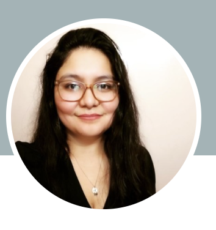

Curriculum Vitae

Romina Huenchunao Avalos
Cirujano Dentista
Especialista en Periodoncia
Mi motivación es mejorar la salud oral de las personas para contribuir a su calidad de vida, mediante la alegría de poder sonreír con confianza.
Experiencia académica:
- Cirujano Dentista
Titulada con Excelencia Académica
Universidad de Chile, 2016
- Especialista en Periodoncia
Titulada Cum Laude
Universidad Andrés Bello, 2019
Experiencia Laboral:
- SAR I.M Conchali, 2021 a la fecha: PRAPS Periodoncia
- Clínica AltoValle, 2022 a la fecha: Atención de Pacientes Periodontales Adultos
- Centro Odontológico Padre Mariano, 2020 a la fecha: Atención de Pacientes Periodontales Adultos
- Atenciones de Odontología General en los distintos CESFAMs de la IM de Conchalí, 2017-2020
Portafolio
Linkedin